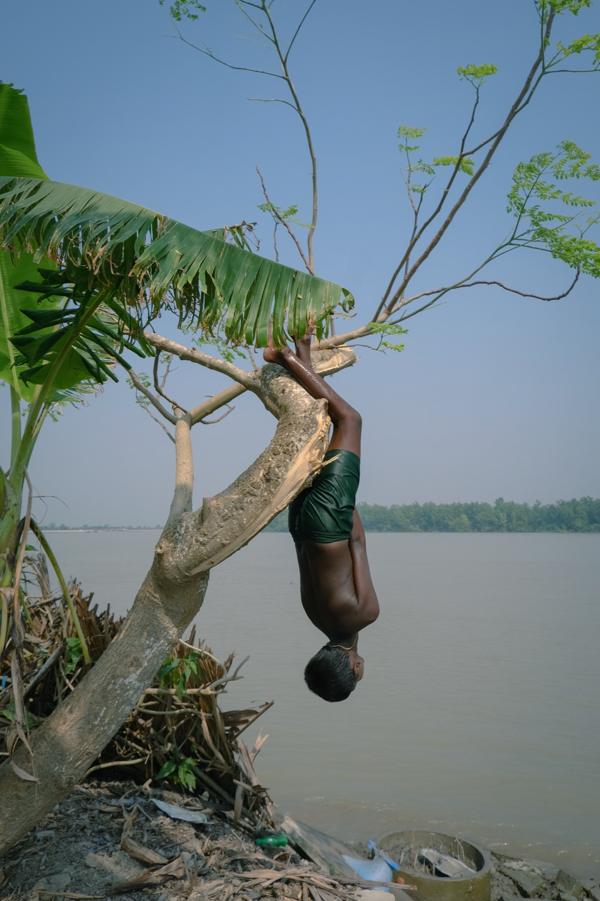
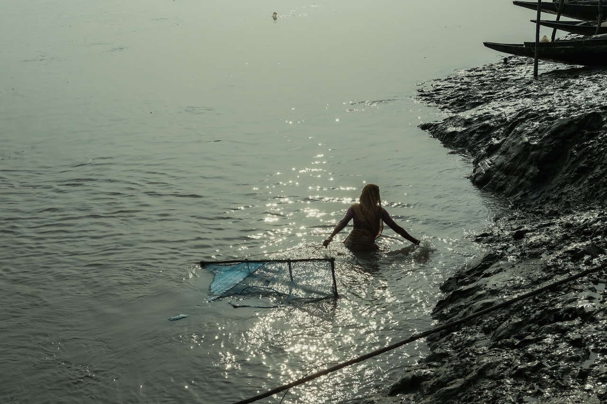
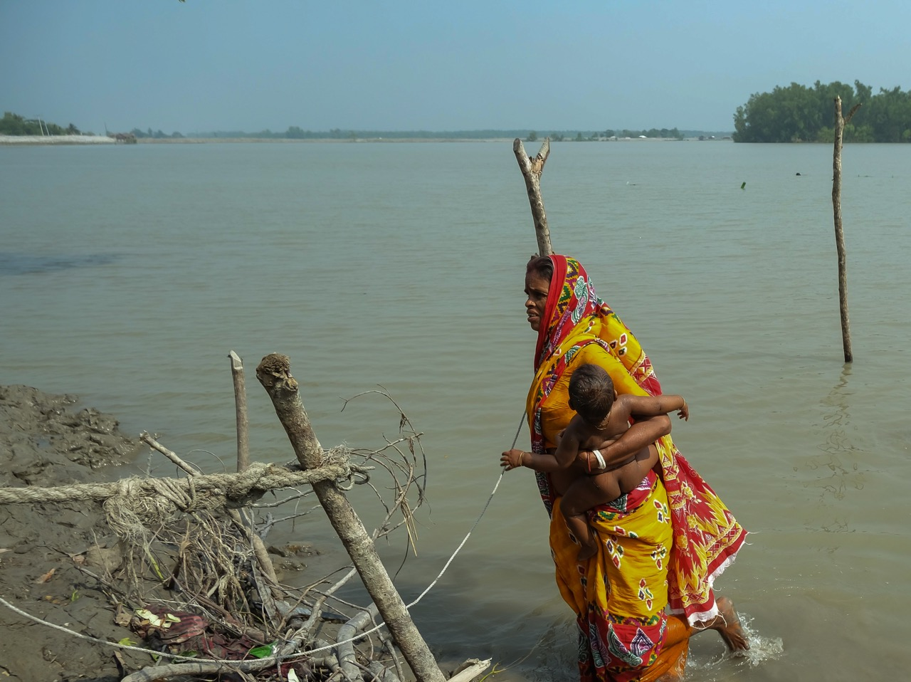
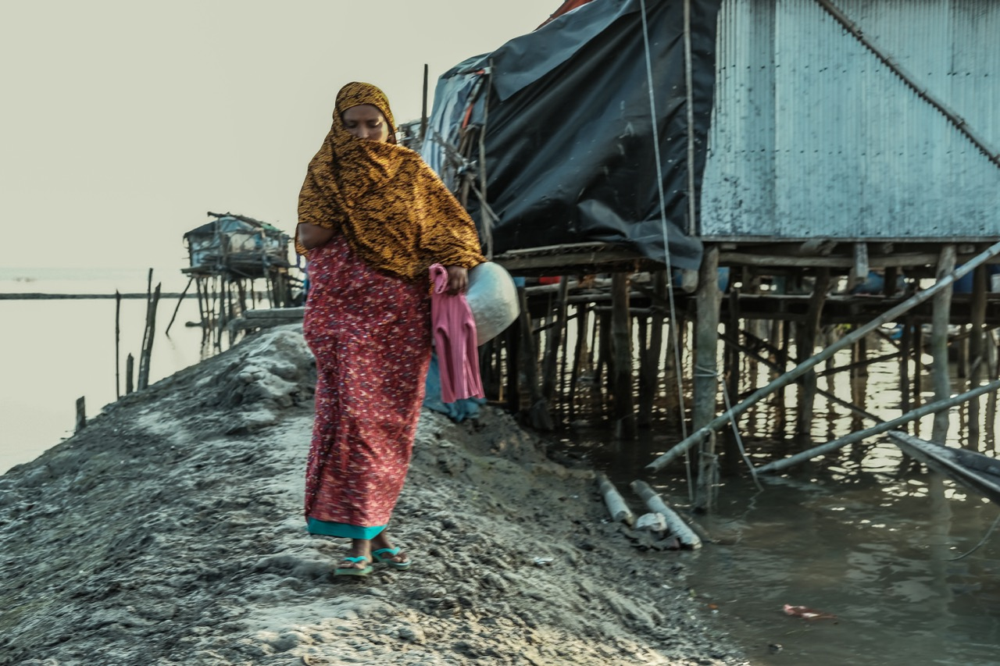
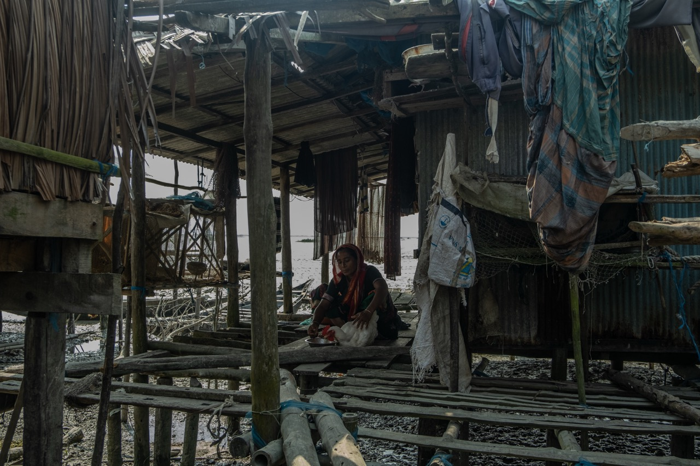
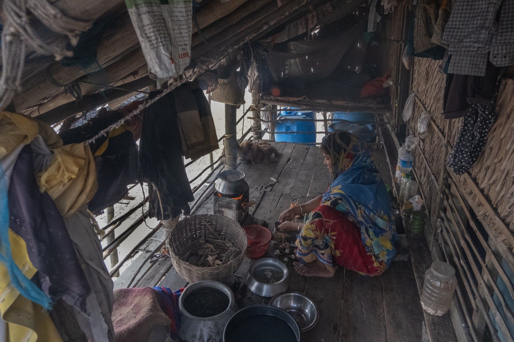
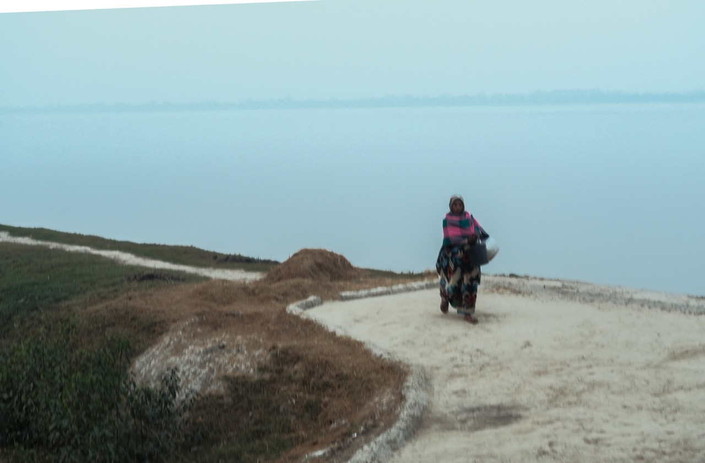

Once There Was a HomeArtist Statement
I photograph the southwest coast of Bangladesh, where I grew up. Salinity, cyclones and tides shape how people live there, and much of that never appears in water-quality data. My photographs follow the people who carry those changes every day, often the women who fetch water and work in it. Photography is how I record what my measurements leave out.
View the documentary
Photo documentary
Bearing the Burnt
Kalabagi, in Bangladesh’s Khulna district, is known as the hanging village. Before Cyclone Aila struck in 2009, its homes stood on the ground, with yards where children played and land that families farmed. After Aila, the river took much of it. The families who stayed now live on embankments, in houses raised on bamboo poles to survive the high tides.
Climate change does not fall evenly here, and the burden of water falls on women. Salinity has shrunk the sources of drinking water. Women travel to the mainland to fetch water, and the river’s saline water is the only option for bathing and daily needs. The raised houses leave little room for the poultry, grocery and rope-making that once added to family income. Many men leave to find work elsewhere, so women carry more risk on their own. Many women also work for long hours in saline water catching shrimp. They describe difficult pregnancies and frequent miscarriages, especially in a first pregnancy, and few know whether the water could be a factor.
The village is close to my native home, and I have watched its people’s lives change. These photographs were made with consent during visits on 4 November and 29 December 2022.







Recognition
Vice President, BUET Photographic Society
2024 – 2025Led photowalks and critiques; curated a campus exhibition.
Workshop instructor
University of Asia Pacific (2025) and BUET Photographic Society (2024). Details in CV
More work
A wider selection is on Instagram.